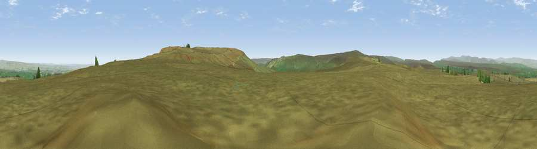

Viewpoint near Bowes
#13533 in England · top 35% of its area beats it · near BowesWhere it is
The exact computed spot (NY 99125 08475). Click the marker for map links.
The view, rendered

A 360° render of this exact spot computed from the terrain model, tree cover and land cover — summer colours, afternoon light, calibrated against photographs of famous viewpoints. Real trees, hedges and buildings will differ in detail.
The panorama
Grey silhouette: terrain skyline in each direction (720 bearings, Earth curvature and refraction included). Dashed green: skyline with trees (+15 m) and buildings (+8 m) as obstacles. Blue strip: how far the ground is visible on each bearing.
Where the view opens
Wedge length = distance to the farthest visible ground on that bearing (vegetation-aware). Rings at 10, 25 and 50 km.
What fills the view
99% grassland ·
Angular shares of the visible panorama (visual magnitude), not map area. Landscape diversity 0.04 (0–1 Shannon).
Key numbers
More beautiful places nearby
The staircase of upgrades: each row has a higher view potential than everything closer. Driving times are estimates from straight-line distance, calibrated against real road routing — check an actual route before setting out.
| Place | Direction | Drive | Score |
|---|---|---|---|
| Viewpoint c10154_8017 | ESE · 2 km | ~5 min | 70.0 |
| Viewpoint near Barningham | ESE · 4 km | ~10 min | 74.1 |
| Viewpoint near Eggleston | N · 16 km | ~28 min | 76.0 |
| Viewpoint c10024_7603 | WSW · 20 km | ~34 min | 76.9 |
| Viewpoint near East Witton | SSE · 28 km | ~44 min | 77.8 |
| Calders | WSW · 34 km | ~52 min | 79.0 |
| Whernside | SW · 37 km | ~55 min | 79.9 |
| Beacon Hill | E · 48 km | ~68 min | 84.7 |
54.47164, -2.01501 · source: screening · position refined by local search. Computed location — check access rights before visiting.